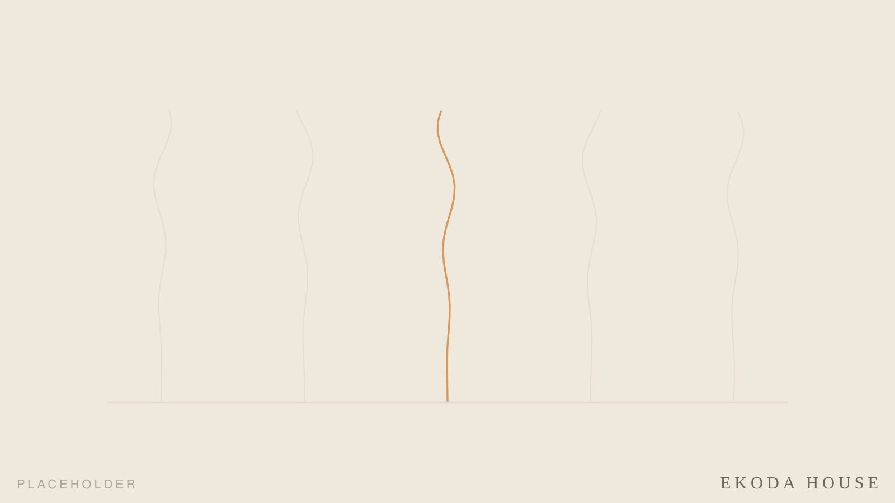
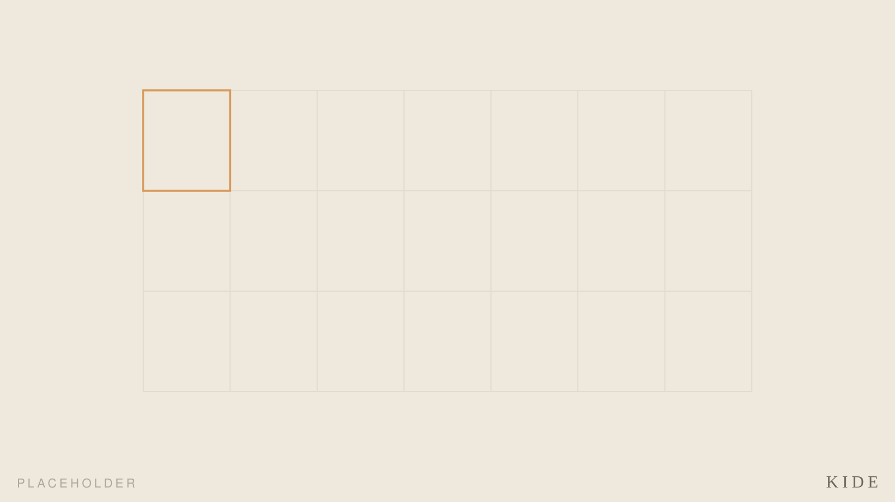
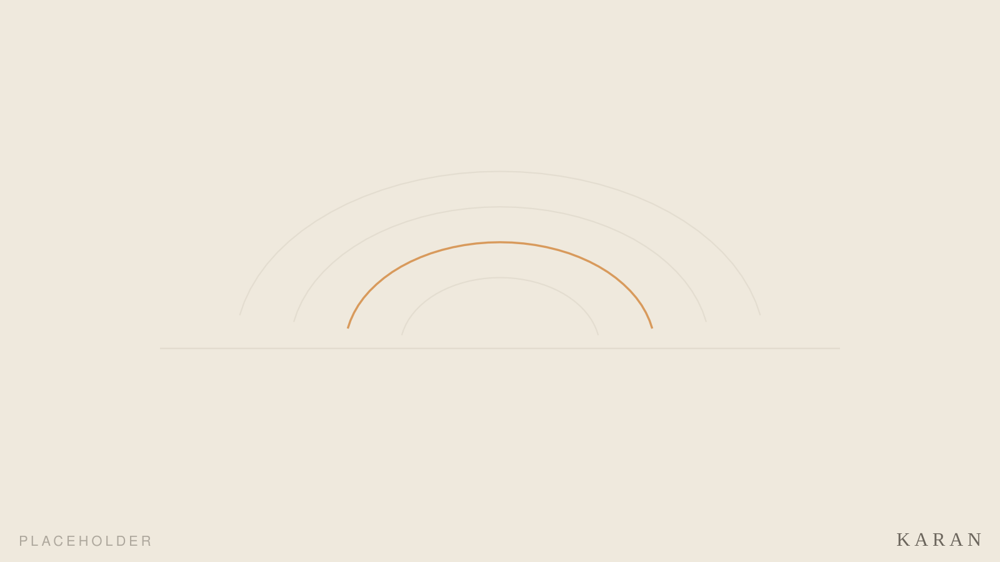

02
手をかけて、長く付き合う仕事
Works
江古田湯の住戸 Room above Ekoda-yu
銭湯の上の一室を、自分の手で少しずつ。設計者が住み手になり、日々世話をしながら暮らす実験住宅。すべての出発点。

KIDE Outdoor Timber Stage, Finland
フィンランド・クフモの屋外木造ステージ。Aalto University Wood Program で設計・施工。Architizer A+Awards Popular Winner、ArchDaily 掲載。

井上さんの家 Inoue House
住まいを引き継ぎ、手を入れて住み続けるための改修。（本文はこれから）

Rooftop Hut
屋上に建てる、ひとつの小さな居場所。（本文はこれから）

厳島神社のフォリー Folly at Itsukushima
水に立つ社のかたわらに置く、小さな構築物。（本文はこれから）

Karan Products Products from bathhouse salvage
解体される銭湯の木材・タイル・金具を再生し、日常の道具へ。銭湯素材の持つ時間の重なりを、新しい形で伝えます。